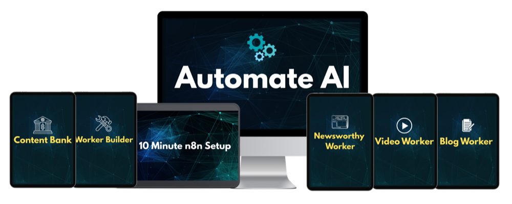

n8n Course for Beginners - How to Build Your First AI Worker
Automate AI is the better starting point for marketers and business owners who want a useful workflow running instead of spending days piecing together tutorials. It combines plain-English setup, ready-made AI Workers and n8n foundation training. Use the free official Academy afterward as a reference when you want certificates or a deeper tour of the platform.
Start with a working AI Worker
Review the ready-made workflows, setup training, current $27 price and 30-day guarantee inside Automate AI.

See Automate AIn8n looks friendly at first. Drag a node onto the canvas, connect it to another box and hit execute.
Then a credential fails, the next app returns nested JSON and the clean little line on the canvas turns red. That moment is where a useful learning path earns its keep.
A beginner does not need to become a software engineer. You do need a working mental model for how data enters the workflow, changes at each step and reaches the final destination. Without that model, every imported template becomes a machine you are scared to touch.
What an n8n course for beginners needs to cover
The first lessons should explain the system from left to right. A trigger starts the run. Nodes perform actions. Data travels between them as structured items. Credentials let the workflow speak to outside services.
That foundation sounds basic, but it solves most early confusion. When a workflow breaks, you can inspect what a node received and what it returned instead of randomly changing settings.
AI agents should come after those basics. An agent node can look impressive, but it adds another layer of uncertainty. Learn how an ordinary workflow moves predictable data before asking a model to choose tools and actions dynamically.
Expressions deserve early attention too. They pull a value from prior data and place it into a field dynamically. A beginner does not need to memorize syntax, but should know how to select a value, preview it and recognize when the result is empty, an array or the wrong data type.
The fastest way to get a useful workflow running
Automate AI is our recommended starting point for marketers and business owners. It begins with work you can put to use, then teaches the n8n concepts behind the build while you have a real workflow open in front of you.
That order matters. A blank canvas and several hours of platform terminology can make automation feel harder than it is. Importing a Worker gives you something concrete to inspect, run and modify from the first session.
The current $27 offer includes n8n foundation training, setup guidance, ready-made AI Workers and a Worker Builder process for adapting the system to additional tasks. The published promise is to help a buyer get a first useful automation running in a single afternoon.
The program is an implementation shortcut. It gets the learner into working examples built around real marketing jobs, then provides enough foundation to understand what the Workers are doing and where to make changes.
The current offer also carries a 30-day money-back guarantee. That creates a practical evaluation window: open the lessons, install the foundation, import a Worker and see whether the teaching style gets you to a successful execution.
Build a useful Worker in one afternoon
Review the current training, ready-made workflows, $27 price and 30-day guarantee.
See Automate AIWhere the free Academy fits
The n8n Academy is useful supplemental training once you have seen a workflow run and want a wider understanding of the platform. Its current catalog includes a Quickstart course and a three-part Foundations program.
N8N101 Essentials covers the canvas, nodes, triggers, schedules and data transformation. N8N102 Integrations moves into APIs, authentication, webhooks, flow control and connected workflows. N8N103 In Practice adds AI, testing, debugging and production habits.
The courses are free and include hands-on exercises, quizzes, completion certificates and verifiable badges. The official Essentials page says learners typically finish that course in two to four hours, although the complete Foundations path requires more time.
Best use of the Academy: deepen your platform knowledge, learn the current terminology and earn a certificate after practical training has already given the lessons a job to do.
Official material has to serve a broad audience. It explains the platform well, but it is not built around the specific content, SEO, lead-generation and AI Workers a marketer wants running.
Keep it bookmarked for updated terminology, exercises and documentation. When an interface changes or a technical detail needs clarification, the vendor's material is the right reference.
Cloud trial or self-hosted setup?
Learning requires an n8n instance. The simplest route is n8n Cloud because the company handles the server, updates and availability. The current free trial requires no credit card for standard Cloud access and includes 1,000 executions, five concurrent executions, a 180-second timeout and one team project.
The public pricing page currently lists Starter at 20 euros per month when billed annually, with 2,500 workflow executions. Pro begins at 50 euros per month on annual billing with 10,000 executions and additional production features.
Community Edition can be self-hosted without paying an n8n Cloud subscription. Free software does not mean zero cost or zero responsibility. You still need a machine or server, updates, backups, security, a domain or network path and enough comfort to repair the instance when it stops.
| Option | Upfront friction | Ongoing responsibility | Best for |
|---|---|---|---|
| Cloud trial | Low | Trial limits and eventual subscription | Fastest beginner start |
| Cloud paid | Low | Monthly or annual plan | People who value managed hosting |
| Self-hosted Community | Medium to high | Server, updates, backups and security | Technical users who want more control |
Use Cloud when the goal is learning workflows rather than learning server administration. Self-host later if control, custom nodes, API access or economics justify the maintenance.
The account setup nobody should rush
Create a separate testing workspace before connecting business-critical accounts. Use sample rows, draft folders and limited-permission API keys where the provider supports them. A first workflow should not have unrestricted access to an entire customer database.
Name credentials by service and purpose rather than with vague labels such as "My Key." Do not paste secrets into Set nodes, sticky notes or exported workflow JSON. Credentials belong in the platform's encrypted credential store.
Turn off automatic activation until the workflow succeeds with known test data. Manual executions are slower at first, but they let you inspect each step without a schedule creating new failures every five minutes.
The first three builds to complete
A scheduled information workflow
Start with a schedule, fetch a simple public data source, format two fields and send the result to email or a spreadsheet. This teaches triggers, executions and mapping without authentication complexity at every step.
A form-to-follow-up workflow
Use a form or webhook, validate the incoming fields, store the record and send a confirmation. This introduces real-time triggers and makes missing data visible.
An AI-assisted workflow with approval
Send a clearly defined task to an AI model, save the draft and require approval before anything public happens. This teaches the most important production habit: AI output should have a destination and a quality gate.
Do not start by building a giant autonomous agent that touches email, a database and every social account. A small workflow with visible inputs and outputs teaches more than a complicated template that works once by accident.
After each build, recreate one section without the tutorial. Disconnect the last node, add it again and map the fields from memory. That tiny exercise shows whether you learned the concept or only followed the cursor.
A four-week learning path
- Week one: learn the canvas. Complete Quickstart or Essentials. Build a scheduled workflow and inspect the data after every node.
- Week two: connect something real. Work with credentials, a webhook and one API. Rebuild a simple workflow without following the lesson line by line.
- Week three: add reliability. Create an error branch, log failed items and prevent duplicate output. Export a clean backup.
- Week four: solve one business job. Build or import a practical automation, measure the time it replaces and document how to maintain it.
The goal after four weeks is not mastery. It is independence. You should be able to open a workflow, understand where its data comes from and make a controlled change without holding your breath.
A beginner-friendly debugging order
- Open the failed execution and identify the first red node, not the last missing result.
- Inspect the input. Confirm the expected item and field actually arrived.
- Read the complete error message and note the status code when an outside service responded.
- Test that node with a small known input.
- Check credentials, permissions, usage limits and required fields.
- Run the workflow again from the earliest changed step.
This order prevents a common beginner habit: rebuilding the whole canvas because one field was renamed upstream.
What production-ready means at the beginner level
A workflow does not need enterprise architecture to be dependable. It needs a defined input, a known output and a safe response when something goes wrong.
Store enough information to identify each run. For a content workflow, that might be a topic ID, source URL, status and output file. For a lead workflow, it might be a form submission ID and the time the confirmation was sent.
Add a notification for failures that require attention. Do not rely on remembering to inspect the executions page. A simple email or Slack alert can prevent a silent failure from sitting unnoticed for a week.
Decide which steps can retry automatically. Reading a public feed may be safe to retry. Charging a card, sending a campaign or creating a client record can produce duplicates if repeated blindly.
Finally, write a five-line operating note: what starts the workflow, which accounts it touches, where output appears, how to pause it and who should be notified if it fails. That document is part of the automation.
How AI changes the learning curve
AI can explain error messages, write expressions, create Code node snippets and help draft API requests. It can also produce confident nonsense or assume fields that do not exist in the current node.
Use it as a builder beside you, not as an oracle. Ask it to explain the expected input and output for each step. Paste a small sanitized example of the data rather than credentials or private customer records.
When asking for help, include the platform version and the exact node. A code sample written for an older release may be logically correct and still fail against the current interface.
Claude Code and similar tools can help generate workflow JSON, but imported code still needs inspection. The transferable skill is not asking for a workflow. It is verifying that the generated workflow does what you intended.
The mistakes that waste the first month
- Importing too much too soon. A 60-node template hides the basic data flow a beginner needs to see.
- Ignoring execution data. The input and output panels usually reveal why the next field is empty.
- Mixing learning and production credentials. Use test accounts or restricted keys where practical.
- Publishing AI output without approval. Begin with drafts and notifications before automatic public actions.
- Skipping backups. Export working versions before large changes.
- Self-hosting for the wrong reason. Saving a subscription can create a server-maintenance job you never wanted.
- Building without a measurable task. Pick a job that currently takes time, count the steps and automate that.
Where video automation fits next
Once triggers, APIs and asynchronous jobs make sense, automated video is a natural next project. A workflow can research a topic, draft a script, submit it to an avatar platform, wait for the render and send the result for approval.
That build adds several useful concepts at once, especially job-status polling and file handling. Our guide to an automated video clone program explains the complete stack and when specialized training is worth the higher price.
Test the presenter layer with the HeyGen free account guide, then review the caption and finishing options in our Submagic evaluation. Together, those guides cover the two video tools surrounding the automation layer.
Common beginner questions
Is the platform hard to learn?
The canvas is approachable. The learning curve comes from data, credentials and outside APIs. A structured path makes those concepts manageable.
Is official training really free?
Yes. The current Academy courses are free and include hands-on work, quizzes, certificates and badges.
Do I have to pay for Cloud?
No. You can begin with the Cloud trial or self-host Community Edition. Self-hosting usually involves hosting cost and technical maintenance.
How quickly can I build something useful?
A focused beginner can build a simple useful workflow in one sitting. Production reliability takes additional testing and error handling.
Why choose Automate AI when the Academy is free?
The Academy teaches the platform broadly. Automate AI is built to get marketers into ready-made Workers and useful business workflows faster, with setup guidance and a 30-day guarantee.
Bottom line
Automate AI is the right starting point when the goal is getting a useful Worker running instead of collecting another folder full of tutorials. It provides the practical workflows, setup help and plain-English bridge from a blank canvas to recurring work handled by AI.
The Academy still earns a place as free supplemental training. Use it to deepen the platform knowledge behind the Workers after you have already built something worth understanding.
Primary sources: n8n Academy overview, N8N101 Essentials, current Cloud pricing and trial limits, official documentation, and the current Automate AI offer. Checked September 23, 2026.
Commercial disclosure: Automate AI is a compensated Shoals Marketing offer. The n8n Academy is free, and we have linked it directly so readers can compare both paths.